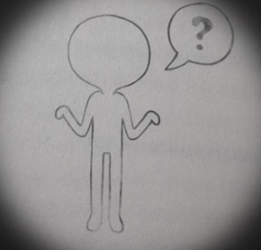

El Mundo Espectral es otra dimension de la existencia, que puede estar en contacto con dimensiones adicionales al Mundo Físico. Se caracteriza por estar compuesto en su mayoría de materia espectral. Su forma y tamaño somos desconocidos incluso para sus pobladores, los fantasmas. El Mundo espectral es ajena al Mundo Físico ordinario pero cercana, y a ninguno es posible percibir el mundo. Sin embargo es posible que información, objetos o criaturas pasen de un mundo a otro, los lugares donde este intercambio puede suceder se conoce entre los vivos como: "sitios encantados", "casas enbrujadas" etcétera.
LA AME

Hay casos de fantasmas que no se han enterado siquiera de lo que son; otros desconocen la existencia del Mundo Espectral o han tardado años o incluso siglos en descubrir y aprender a usar sus habilidades. Es por eso que la A.M.E. (Agencia Mundo Espectral) es una organización de fantasmas dedicada a asistir a otros y facilitar las etapas de sus existencia tras haber dejado de pertenecer al Mundo Físico. Pero esta agencia se rige por reglas que se beben obedecer. Se sabe de la existencia de un cuerpo de gobierno llamado R.I.S. (Regencia Intangible y Suprema) suele manifestarse para impartir justicia. Hay instituciones particulares que tratan directamente con fantasmas, seres humanos y otras criaturas, como: O.C.A.I. (Oficina de Control de Accesos Inmateriales) que regula el pase se los fantasmas a dimensiones superiores desde el Mundo Físico Otras so, La Gerencia de Rtribuciones, la Gerencia de la Nada, y la Agencia Mundo Espectral. Sin embargo, los fantasmas y seres humanos desconfían de estas organizaciones por lo impresionante de sus fines y operaciones, especialmente por la lentitud e inconstancia del personal.

Superposiciones
Es la zona o volumen que está simultáneamente en el Mundo Físico y en el Mundo Espectral.
En estas superposiciones ambas dimensiones coinciden y es posible intercambiar objetos e información entre ambos Mundos.
Puede incluso permitirse el cruce de seres vivos y fantasmas entre uno y otro.
Clasificación:
⚜️Naturales, se dan sin intervención humana o fantasmal y suelen ser efímeras o permanentes.
⚜️Artificiales, se crean mediante Rituales mágicos u otros procedimientos.